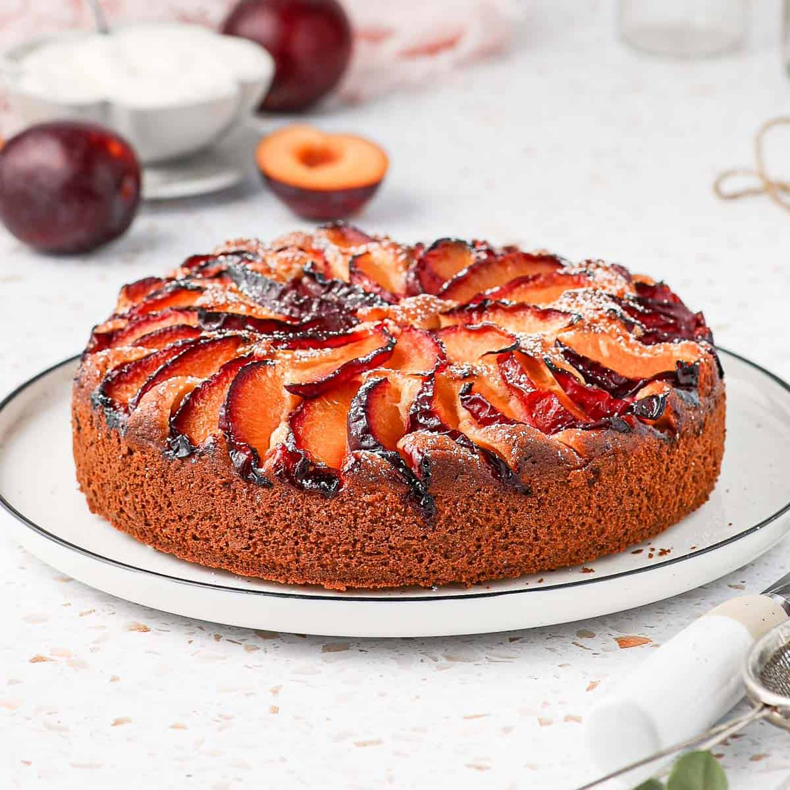

Plum cake recipe

Plum cake
This is a great cake for those who find the usual cakes too filling. This is great for entertaining as well as for the family. If this cake stays more than 24 hours, it should be kept refrigerated.
Ingredients:
- 3 eggs
- 1/2 cup butter, softened
- 1/2 cup white sugar
- 1 teaspoon lemon zest
- 1 cup all-purpose flour
- 1/2 teaspoon baking powder
- 1 and a half cups plums, pitted and quartered